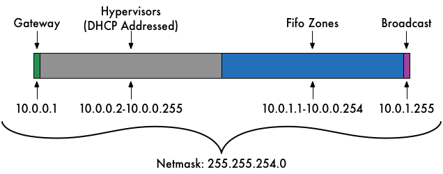

Project FiFo is an open-source Cloud Management and Orchestration system for SmartOS virtualization environments.
Hypervisors
10.88.88.128Remove
How do you authenticate to your hypervisors?
Network Layout
It is recommended that you run an "Admin Network" that is used only for
command/control communications. Becasue this network will need to allow Fifo
traffic we will need some information on it.
When a network is created for Fifo it expects to be able to assign every IP
address in the given range. Fifo does not do DHCP (which is likely how you
are booting SmartOS). For these reasons it is important to give some thought
to your network layout. The hypervisors need to be on the same subnet as the
Fifo nodes, but for orginzation purposes it is nice to keep groups of at least
/24. A nice way to deal with this is to use a /23 subnet and give the first
254 (a.b.c.1 used for gateway) for hypervisors and the second 254 (a.b.d.255
is used for broadcast) for Fifo, and other management tools. Obviously how
you organize things is up to you, but you must be careful to not have the
same addresses handed out twice.

Gathered Facts
User Defined Settings
LeoFS - The Lion of Storage
Project Fifo uses LeoFS as a central object based file system. LeoFS is an
unstructured object storage for the web and a highly available, distributed,
eventually consistent storage system. Project Fifo use LeoFS for storing VM
datasets, snapshots and backups
LeoFS Consistency
It is very important to understand the following settings. Once set they can never be changed.
Replicas (N) - The total number of replicas of each file the LeoFS will store. Storage space requirements will be equal to number of replicas multiplied by total of file sizes. A 1G file will take 3G on disk when using a replica setting of 3.
Read Replicas (R) - The number of replicas needed for a successful READ operation.
Write Replicas (W) - The number of replicas needed for a successful WRITE operation.
Delete Replicas (D) - The number of replicas needed for a successful DELETE operation.
Consistency Level
N
R
W
D
Single Server
1
1
1
1
Low
3
1
1
1
Medium
3
1
2
2
High
3
1
3
3
Single Server settings should only be used when you intend on only having a single LeoFS and never expanding your cluster.
Replicas (N)
Read Replicas (R)
Write Replicas (W)
Delete Replicas (D)
LeoFS Storage Nodes
It is required to have at least one storage node. You may not have more storage nodes than you have hypervisors. Ideally the number of storage nodes is equal to or greater than the number of replicas stored, but this is not enforced.
Zone Security
In order to provision roles to newly created zones Leash needs a way to login.
You can provide an ssh keyset (both public and private) or a keyset can be
generated for you. If you have an existing keyset you may choose to use it, which
will allow you to continue to login to the newly created zone via SSH after this
installer completes. If you choose to have Leash create a keyset for you it will be
destroyed and you will either have to add a public key to your Fifo user account,
or login to zones via zlogin.
How do you authenticate to your hypervisors?
Pre Installation Check
Based on the information you have provided Leash will now login to each hypervisor to
check for communication and minimum requirements. If you at this point entered a private
SSH key for your hypervisors it will be written to disk in the zone created for installation.
No changes will be made to your hypervisors.